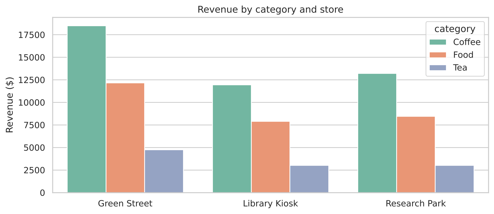

Campus Coffee Sales Analysis
I analyzed one semester of point-of-sale data from three campus coffee shops to find when and where revenue comes from, then suggested staffing and menu changes.
The question
Where does the revenue come from, and when are the stores busiest? The answers should help plan staff hours and menu changes.
The data
The data is one semester of transactions from Green Street, Library Kiosk and Research Park, from January 5 to May 8, 2026. Each row is one line on a sale: date, hour, store, item, category, unit price and quantity. The file has 13,829 rows with no missing values and no duplicate rows. Revenue is unit price times quantity, and the term total is $83,046.
The data has no costs, wages or margins, so these findings are about revenue, not profit.
What I did
- Checked the file for missing values, duplicate rows and items with more than one price.
- Added up revenue by store, category, item and day.
- Grouped sales by weekday and hour. The heatmap divides each total by the number of that weekday in the term, so it shows a typical day.
- Compared the spring break week with a typical week.
Charts



Interactive charts
These two charts are drawn with Plotly.js from a small summary file, not from the full transaction file. Hover over a chart for details.
Findings
- Green Street brings in the most revenue: $35,434, or 42.7% of the total. It leads in every category, so it should get the most staff hours.
- Spring break cut weekly revenue by about two thirds. The break week brought in $1,678, against about $4,800 in a typical week. Shorter hours that week would save labor cost.
- Late morning is the busiest time. On weekdays, sales peak between 10 and 12. Weekdays bring in 87% of revenue.
- Library Kiosk peaks in the afternoon. About 64% of its revenue comes after 2 p.m., so its staffing should start later than the other stores.
- Lattes bring in the most revenue: $19,121, ahead of breakfast sandwiches ($13,444) and drip coffee ($13,288). A coffee and breakfast sandwich bundle could raise the average order.
The labor savings and the bundle idea are untested. The data has no cost or order-size detail, so the next step would be to check them against wage and receipt data.